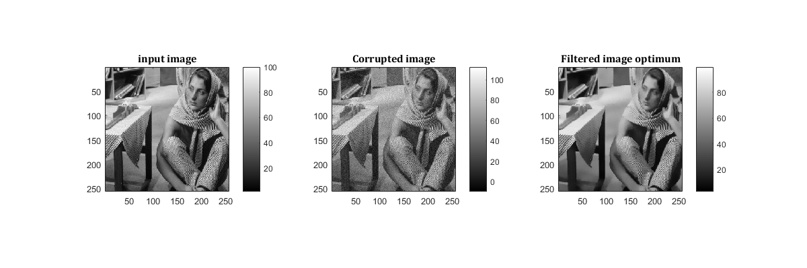
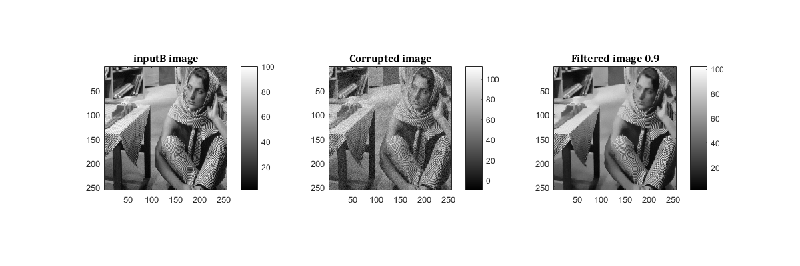
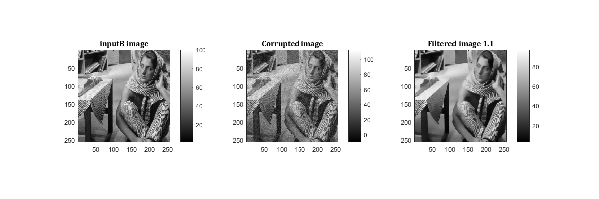
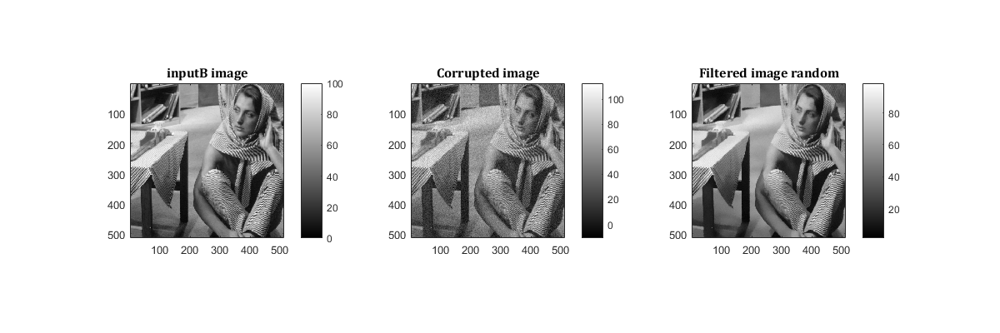
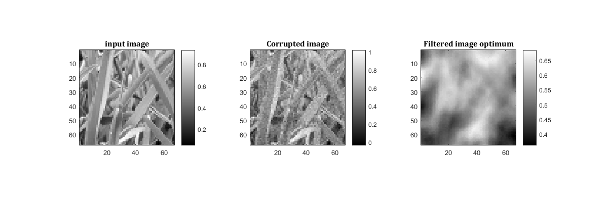
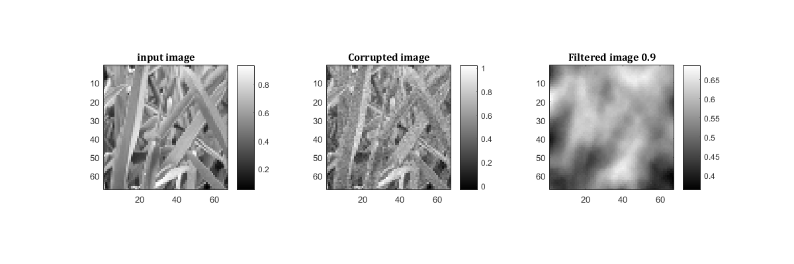
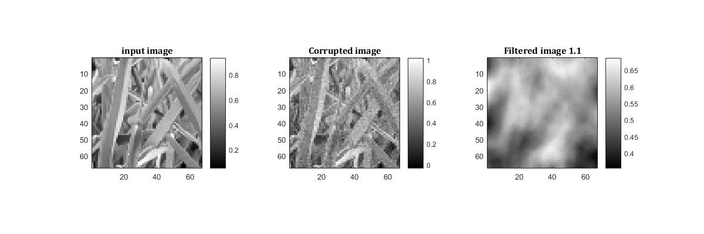
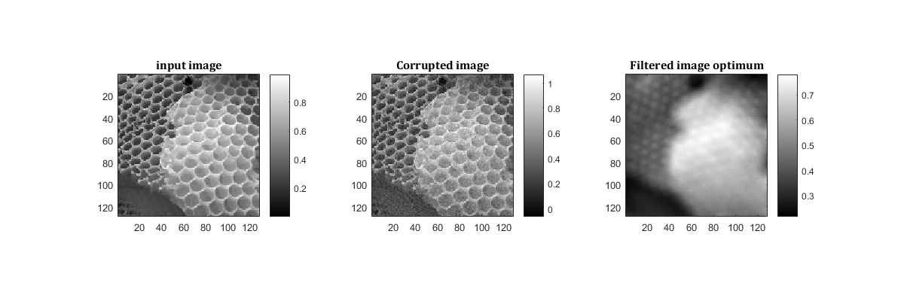

MyMainScript
Contents
- Image 1: Barbara
- Corrupting image with noise
- Optimal parameter values:
- Note:
- Image 2: Grass Noisy
- Patch-based filtering with optimal parameters
- Optimal parameter values:
- Note:
- Patch-based filtering with sub-optimal parameters
- 0.9 SD
- 1.1 SD
- Corrupting image with noise
- Patch-based filtering with optimal parameters
- Optimal parameter values:
- Note:
- Patch-based filtering with sub-optimal parameters
- 0.9 SD
- 1.1 SD
Image 1: Barbara
% Reading inputB inputB = load('../data/barbara.mat'); inputB = double(inputB.imageOrig);
Corrupting image with noise
[xb,yb] = size(inputB); sd_b = 0.05*(max(max(inputB)) - min(min(inputB))); corrupted_B = inputB + sd_b*randn(xb,yb); corrupted_B_shrunk = corrupted_B(1:2:end,1:2:end); inputB_s = inputB(1:2:end, 1:2:end); % Patch-based filtering with optimal parameters tic; h_b = 1.25; filtered_B = myPatchBasedFiltering(corrupted_B_shrunk,9,25,1.5,h_b); RMSD_b = sqrt(sum(sum((filtered_B-inputB_s).^2))/(xb*yb)); my_imshow(inputB_s, 'input image', corrupted_B_shrunk, 'Corrupted image', filtered_B, 'Filtered image optimum'); toc;
Optimal parameter values:
The optimal value of the standard deviation (SD) is 1.25
fprintf('The correspoding RMSD is %2.3f.\n', RMSD_b); % Note: % The mask has been scaled to the range [0, 255] for the purpose of display. mask = fspecial('gaussian', 9, 1.5); my_imshow(mask, 'Mask to make patches isotropic') % Patch-based filtering with sub-optimal parameters % 0.9 SD tic; filtered_b_9 = myPatchBasedFiltering(corrupted_B_shrunk,9,25,1.5,h_b*0.9); RMSD_b9 = sqrt(sum(sum((filtered_b_9-inputB_s).^2))/(xb*yb)); my_imshow(inputB_s, 'inputB image', corrupted_B_shrunk, 'Corrupted image', filtered_b_9, 'Filtered image 0.9'); fprintf('The correspoding RMSD is %2.3f.\n', RMSD_b9); toc; % 1.1 SD filtered_b_11 = myPatchBasedFiltering(corrupted_B_shrunk,9,25,1.5,h_b*1.1); RMSD_b11 = sqrt(sum(sum((filtered_b_11-inputB_s).^2))/(xb*yb)); my_imshow(inputB_s, 'inputB image', corrupted_B_shrunk, 'Corrupted image', filtered_b_11, 'Filtered image 1.1'); fprintf('The correspoding RMSD is %2.3f.\n', RMSD_b11);
Note:
Undersampling, by spatio-gaussian sampling, has not been done Instead, a spatio-Gaussian thresholding has been done to ensure patches far from the the pixel of interest have less contribution, and patches are isotropic
% Using random patch selection % Undersample the image using spatial gaussian distribution. Poorer RSMD % but large drop in execution time outputRANDOM = myRandomPatchBasedFilter(corrupted_B,9,25,1.5,h_b,100); [x,y] = size(corrupted_B); RMSD_b_ran = sqrt(sum(sum((outputRANDOM-inputB).^2))/(x*y)); my_imshow(inputB, 'inputB image', corrupted_B, 'Corrupted image', outputRANDOM, 'Filtered image random'); fprintf('The correspoding RMSD is %2.3f.\n', RMSD_b_ran);
Elapsed time is 47.448702 seconds. The correspoding RMSD is 1.742. The correspoding RMSD is 1.630. Elapsed time is 43.878844 seconds. The correspoding RMSD is 1.873. The correspoding RMSD is 3.373.   
Image 2: Grass Noisy
% Reading inputB inputG = im2double(imread('../data/grass.png')); % Corrupting image with noise [xg,yg] = size(inputG); sd_g = 0.05*(max(max(inputG)) - min(min(inputG))); corrupted_G = inputG + sd_g*randn(xg,yg); corrupted_G = corrupted_G(1:2:end,1:2:end); inputG = inputG(1:2:end,1:2:end);
Patch-based filtering with optimal parameters
tic; h_g = 0.17625; filtered_G = myPatchBasedFiltering(corrupted_G,9,25,9,h_g); RMSDg = sqrt(sum(sum((filtered_G-inputG).^2))/(xg*yg)); my_imshow(inputG, 'input image', corrupted_G, 'Corrupted image', filtered_G, 'Filtered image optimum'); toc;
Optimal parameter values:
The optimal value of the standard deviation (SD) is h
fprintf('The correspoding RMSD is %2.3f.\n', RMSDg);
Elapsed time is 3.271908 seconds. The correspoding RMSD is 0.062.
Note:
The mask has been scaled to the range [0, 255] for the purpose of display.
mask = fspecial('gaussian', 9, 1.5); my_imshow(mask, 'Mask to make patches isotropic')
Patch-based filtering with sub-optimal parameters
0.9 SD
tic; filtered_g_9 = myPatchBasedFiltering(corrupted_G,9,25,9,h_g*0.9); RMSD_g9 = sqrt(sum(sum((filtered_g_9-inputG).^2))/(xg*yg)); my_imshow(inputG, 'input image', corrupted_G, 'Corrupted image', filtered_g_9, 'Filtered image 0.9'); fprintf('The correspoding RMSD is %2.3f.\n', RMSD_g9); toc;
The correspoding RMSD is 0.062. Elapsed time is 3.364857 seconds.
1.1 SD
filtered_g_11 = myPatchBasedFiltering(corrupted_G,9,25,9,h_g*1.1); RMSD_g11 = sqrt(sum(sum((filtered_g_11-inputG).^2))/(xg*yg)); my_imshow(inputG, 'input image', corrupted_G, 'Corrupted image', filtered_g_11, 'Filtered image 1.1'); fprintf('The correspoding RMSD is %2.3f.\n', RMSD_g11); % Image 3: Honey Comb %%Reading input inputH = im2double(imread('../data/honeyCombReal.png'));
The correspoding RMSD is 0.062.
Corrupting image with noise
[xh,yh] = size(inputH); sd_h = 0.05*(max(max(inputH)) - min(min(inputH))); corrupted_H = inputH + sd_g*randn(xh,yh); corrupted_H = corrupted_H(1:2:end,1:2:end); inputH = inputH(1:2:end,1:2:end);
Patch-based filtering with optimal parameters
tic; h_h = 1.25; filtered_H = myPatchBasedFiltering(corrupted_H,9,25,1.5,h_h); RMSD_h = sqrt(sum(sum((filtered_H-inputH).^2))/(xh*yh)); my_imshow(inputH, 'input image', corrupted_H, 'Corrupted image', filtered_H, 'Filtered image optimum'); toc;
Optimal parameter values:
The optimal value of the standard deviation (SD) is h
fprintf('The correspoding RMSD is %2.3f.\n', RMSD_h);
Elapsed time is 11.307371 seconds. The correspoding RMSD is 0.063.
Note:
The mask has been scaled to the range [0, 255] for the purpose of display.
mask = fspecial('gaussian', 9, 1.5); my_imshow(mask, 'Mask to make patches isotropic')
Patch-based filtering with sub-optimal parameters
0.9 SD
tic; filtered_H_9 = myPatchBasedFiltering(corrupted_H,9,25,1.5,h_h*0.9); RMSD_h9 = sqrt(sum(sum((filtered_H_9-inputH).^2))/(xh*yh)); my_imshow(inputH, 'input image', corrupted_H, 'Corrupted image', filtered_H_9, 'Filtered image 0.9'); fprintf('The correspoding RMSD is %2.3f.\n', RMSD_h9); toc;
The correspoding RMSD is 0.063. Elapsed time is 11.065694 seconds.
1.1 SD
filtered_h_11 = myPatchBasedFiltering(corrupted_H,9,25,1.5,h_h*1.1); RMSD_h11 = sqrt(sum(sum((filtered_h_11-inputH).^2))/(xh*yh)); my_imshow(inputH, 'input image', corrupted_H, 'Corrupted image', filtered_h_11, 'Filtered image 1.1'); fprintf('The correspoding RMSD is %2.3f.\n', RMSD_h11);
The correspoding RMSD is 0.063.